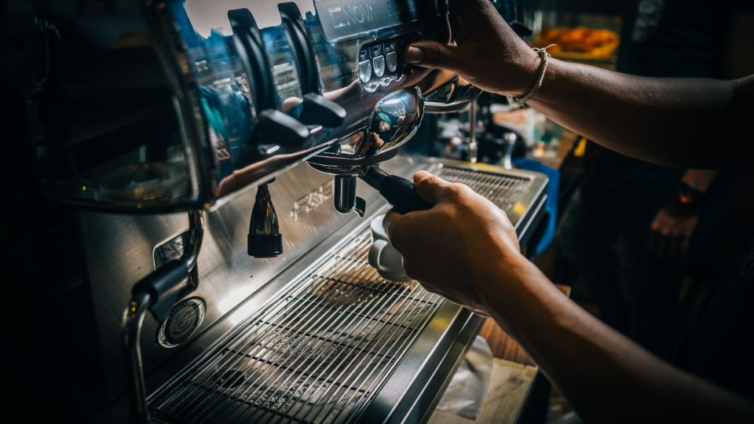
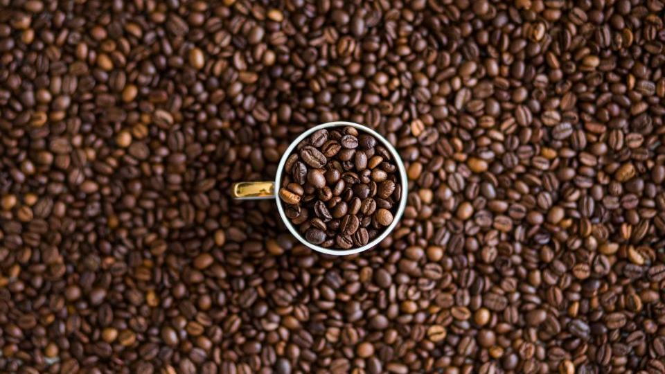

朝の一杯や、ほっと一息つきたいときのコーヒー。せっかくなら、もっと美味しく淹れたいものです。実は、特別な道具を買い足さなくても、ちょっとした工夫をするだけで、味は大きく変わります。この記事では、今日からすぐに実践できる5つのコツをご紹介します。
1. お湯の温度は、沸騰直後より少し待つ
コーヒーを淹れるとき、沸かしたばかりの熱湯をそのまま使っていませんか。実は、お湯が熱すぎると、苦味や雑味が出やすくなります。
目安は90度前後です。やかんで沸騰させたあと、1分ほど置いてから注ぐと、ちょうど良い温度になります。温度計がなくても、この「少し待つ」だけで、まろやかな味わいに近づきます。
2. 最初の30秒は「蒸らし」の時間

お湯を注ぐとき、いきなり全量を注いでいませんか。美味しく淹れるコツは、最初に少量のお湯を注いで、30秒ほど待つことです。これを「蒸らし」と呼びます。
コーヒーの粉全体が、ゆっくりと膨らんでいくのが見えます。この蒸らしをはさむことで、粉からしっかりと風味が引き出され、香りが豊かになります。
3. 豆は淹れる直前に挽く
挽いたコーヒー粉は、時間とともに香りが飛んでいきます。もしミルをお持ちなら、淹れる直前に挽くのがおすすめです。挽きたての香りは、それだけでごちそうになります。
ミルがない場合でも、粉で購入したものは、開封後なるべく早めに使い切り、密閉できる容器に入れて保存すると、風味が長持ちします。
4. 粉の量は、気持ち多めが失敗しにくい

「なんだか味が薄い」と感じるときは、粉の量が足りていないことが多いです。一般的な目安は、1杯（約150ml）に対して、粉10〜12グラムほど。
最初は少し多めから試して、自分の好みに合わせて調整していくと、失敗が少なくなります。薄いよりは、少し濃いめの方が、あとで調整しやすいものです。
5. 淹れたらすぐに飲む
コーヒーは、時間が経つほど風味が落ちていきます。保温ポットで長時間温め続けると、苦味が強くなってしまうこともあります。
一番美味しいのは、淹れたてです。飲む分だけを、そのつど淹れるのが、実は一番の贅沢かもしれません。
まとめ
この記事のポイント
- お湯は沸騰直後より少し待って、90度前後で注ぐ
- 最初の30秒は「蒸らし」の時間をとる
- 豆は淹れる直前に挽くと、香りが豊かになる
- 粉の量は、気持ち多めが失敗しにくい
- 淹れたてを、すぐに味わう
どれも、特別な道具や費用は必要ありません。いつもの一杯に、ひとつずつ取り入れてみてください。きっと、いつもより美味しいコーヒーに出会えるはずです。